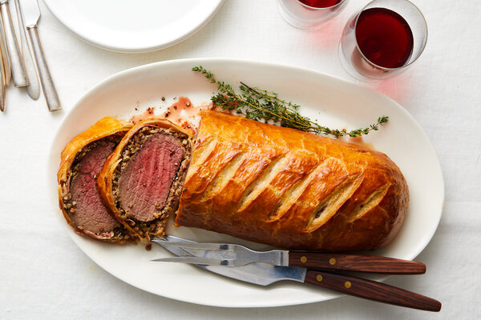

Home
BeefyBoi

A traditional Beef Wellington consists of a beef tenderloin wrapped in layers of pâté, duxelles (a finely chopped mushroom mixture), parma ham, and puff pastry, then baked. Rumor has it that Beef Wellington got its name from Arthur Wellesley, the 1st Duke of Wellington, who counted the dish among his favorite recipes.
- Extra-virgin olive oil
- shallots, sliced
- 2 cloves garlic, peeled and smashed
- 3 sprigs fresh thyme, leaves only
- To make the Duxelles: Add mushrooms, shallots, garlic, and thyme to a food processor and pulse until finely chopped. Add butter and olive oil to a large saute pan and set over medium heat. Add the shallot and mushroom mixture and saute for 8 to 10 minutes until most of the liquid has evaporated. Season with salt and pepper and set aside to cool.
- To prepare the beef: Tie the tenderloin in 4 places so it holds its cylindrical shape while cooking. Drizzle with olive oil, then season with salt and pepper and sear all over, including the ends, in a hot, heavy-based skillet lightly coated with olive oil - about 2 to 3 minutes. Meanwhile set out your prosciutto on a sheet of plastic wrap (plastic needs to be about a foot and a half in length so you can wrap and tie the roast up in it) on top of your cutting board. Shingle the prosciutto so it forms a rectangle that is big enough to encompass the entire filet of beef. Using a rubber spatula cover evenly with a thin layer of duxelles. Season the surface of the duxelles with salt and pepper and sprinkle with fresh thyme leaves. When the beef is seared, remove from heat, cut off twine and smear lightly all over with Dijon mustard. Allow to cool slightly, then roll up in the duxelles covered prosciutto using the plastic wrap to tie it up nice and tight. Tuck in the ends of the prosciutto as you roll to completely encompass the beef. Roll it up tightly in plastic wrap and twist the ends to seal it completely and hold it in a nice log shape. Set in the refrigerator for 30 minutes to ensure it maintains its shape.
- Preheat oven to 425 degrees F.
- On a lightly floured surface, roll the puff pastry out to about a 1/4-inch thickness. Depending on the size of your sheets you may have to overlap 2 sheets and press them together. Remove beef from refrigerator and cut off plastic. Set the beef in the center of the pastry and fold over the longer sides, brushing with egg wash to seal. Trim ends if necessary then brush with egg wash and fold over to completely seal the beef - saving ends to use as a decoration on top if desired. Top with coarse sea salt. Place the beef seam side down on a baking sheet.